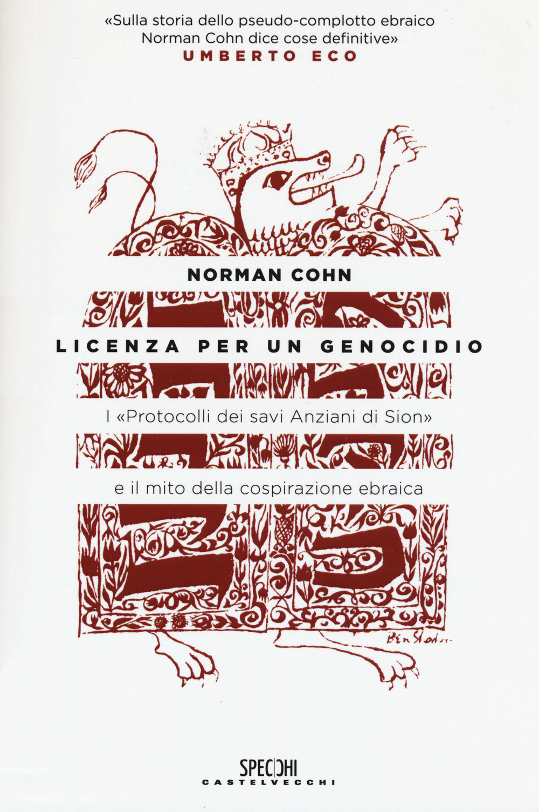
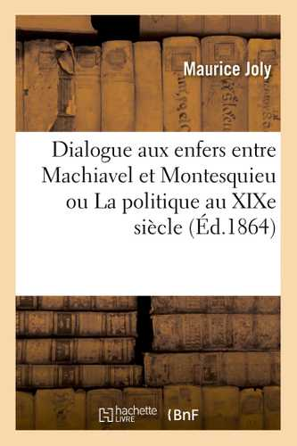
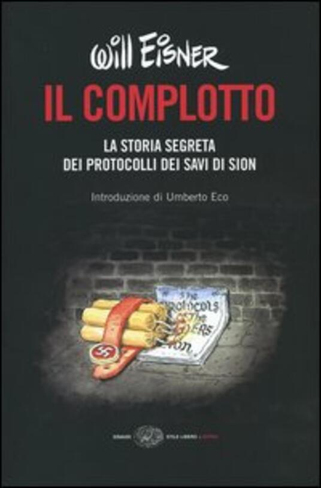

32:43 · 8 OPERE
Norman Cohn, "I protocolli di Sion". Storia di un falso storico.
Il filo del discorso
Dr Divago presenta Licenza per un genocidio di Norman Cohn come strumento per comprendere la falsificazione dei Protocolli dei savi di Sion e la loro persistenza nella propaganda antisemita. Sottolinea il confronto con il dialogo politico di Maurice Joly e considera la storia del falso anche un caso di studio della manipolazione delle opinioni. Il fatto che una costruzione sia assurda o screditata, sostiene, non ne elimina la pericolosità sociale. Il discorso si allarga a Freud, al rapporto fra cultura e realtà e alla necessità di distinguere gruppi di potere concreti da un popolo o una religione ai quali si attribuisca una colpa collettiva. Seguono esempi sui criteri di giudizio delle persone, sul confronto fra pratiche culturali e sulla differenza fra argomentazione e sofistica. La manna dell’Esodo e il parlare sì sì, no no diventano immagini della misura e della responsabilità della parola. Nella conclusione il relatore descrive un proprio esemplare italiano del 1938, con annotazioni che considera testimonianze inquietanti della diffusione del pregiudizio, e richiama il fumetto documentario di Will Eisner come ulteriore strumento divulgativo. La sintesi mantiene ferma la natura fraudolenta dei Protocolli e distingue questa verifica storica dai giudizi politici, morali e psicologici espressi nel resto dell’intervento.
I libri nel discorso

I Protocolli dei savi di Sion (falso antisemita)
Copertina storica di un falso antisemita: The Jewish Peril · Londra, Eyre & Spottiswoode · 1920
Fotografia museale della copertina dell’edizione inglese del 1920, conservata dall’USHMM. È mostrata come documento storico di propaganda, senza attribuire questa edizione al video o avallare le sue falsificazioni.
Protocolli degli anziani/savi di Sion, esplicitamente discussi come falso antisemita.
Passaggio 0:29 ↗ · Fonti e libro ↗
Licenza per un genocidio
Copertina: Castelvecchi · 2015
Copertina autentica controllata visivamente. Edizione di riferimento; non identifica l’esemplare usato o citato nel video.
Norman Cohn, Licenza per un genocidio, edizione Einaudi nominata; immagine di riferimento già presente Castelvecchi 2015, distinta dalla copia citata.
Passaggio 2:34 ↗ · Fonti e libro ↗
Dialogo agli inferi tra Machiavelli e Montesquieu (Dialogue aux enfers entre Machiavel et Montesquieu)
Copertina: Hachette BNF,1 settembre 2017, facsimile dell’edizione originale 1864,343 pagine; ISBN 9782019128326.
Copertina autentica Hachette BNF della ristampa patrimoniale 2017, con autore e titolo completi.1864 è la data dell’originale riprodotto, non della moderna confezione. Nessuna edizione italiana è attribuita al filmato.
Dialogo fra Machiavelli e Montesquieu all’inferno, titolo esplicito; autore Maurice Joly riscontrato bibliograficamente.
Passaggio 5:14 ↗ · Fonti e libro ↗
Il disagio della civiltà
Copertina: Einaudi, 2010
Das Unbehagen in der Kultur di Freud: titolo italiano normalizzato Il disagio della civiltà, non La crisi della civiltà.
Passaggio 10:51 ↗ · Fonti e libro ↗
Bibbia
Copertina: San Paolo, 2014 · Nuova Versione dai Testi Antichi · edizione di riferimento
Racconto della manna: Esodo 16, letto come metafora della misura e della distribuzione.
Passaggio 24:36 ↗ · Fonti e libro ↗Bibbia
Copertina: San Paolo, 2014 · Nuova Versione dai Testi Antichi · edizione di riferimento
Sia il vostro parlare sì sì, no no: Matteo 5,37, titolo Vangelo non specificato.
Passaggio 26:06 ↗ · Fonti e libro ↗
Mein Kampf
Copertina: Hitler, Mein Kampf. Eine kritische Edition, Institut für Zeitgeschichte, 2016, due volumi, a cura di Christian Hartmann, Thomas Vordermayer, Othmar Plöckinger e Roman Töppel; ISBN 9783981405231.
Immagine autentica della copertina grigia dell’edizione critica dell’Institut für Zeitgeschichte. Si tratta di un’opera in due volumi: l’immagine piana di copertina non è dichiarata fotografia completa dei due volumi né edizione originale nazista. La ristampa precisa illustrata non è attribuita dal solo ISBN.
Il relatore descrive una dedica con un passo del Mein Kampf in una copia del 1938: citazione e annotazione non viste.
Passaggio 29:18 ↗ · Fonti e libro ↗
Il complotto. La storia segreta dei Protocolli dei Savi di Sion
Identificazione probabile
Copertina: Einaudi, Stile libero Extra,2005, traduzione di Francesco Pacifico, introduzione Umberto Eco; ISBN 9788806177850. Il catalogo bibliotecario descrive IX,135 pagine.
Copertina autentica Einaudi con autore, titolo e introduzione di Umberto Eco. Il volume smaschera il falso antisemita: non è presentato come prova di una cospirazione o come opera attribuita a Eco. Nessuna tiratura specifica è riconosciuta nel filmato.
Will Eisner, fumetto sulla storia dei Protocolli,2005, introduzione Umberto Eco; titolo completo identificato dalla descrizione.
Passaggio 31:11 ↗ · Fonti e libro ↗